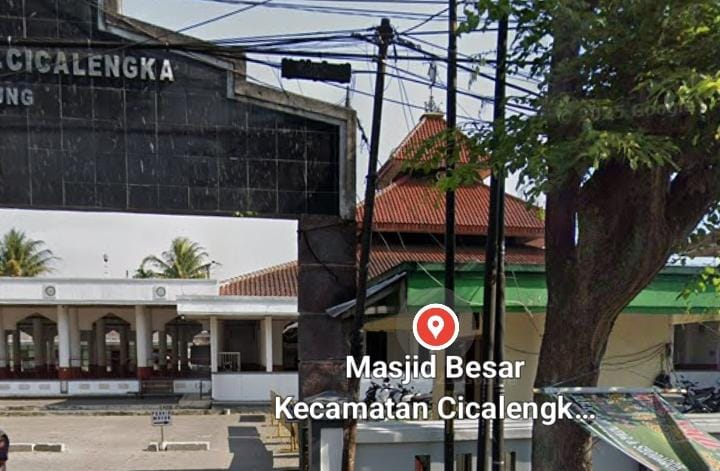

Sejarah Masjid Agung Cicalengka: Masjid Bersejarah di Kawasan Alun-Alun Bandung Timur

Cicalengka merupakan salah satu kawasan di Kabupaten Bandung yang mempunyai perjalanan sejarah cukup panjang. Selain dikenal sebagai kawasan perdagangan, pendidikan, dan jalur transportasi penting di Bandung Timur, Cicalengka juga menyimpan sejumlah bangunan yang menjadi saksi perkembangan masyarakat dari masa ke masa.
Salah satu bangunan yang memiliki nilai sejarah tersebut adalah Masjid Agung Cicalengka atau Masjid Besar Cicalengka. Masjid yang berada di sekitar kawasan Alun-Alun Cicalengka ini bukan hanya menjadi tempat ibadah umat Islam, tetapi juga memiliki hubungan erat dengan kehidupan sosial dan perkembangan masyarakat setempat.
Masjid ini bahkan dikenal dengan sebutan Masjid Kaum. Sejumlah penelitian sejarah mencatat perjalanan panjang masjid tersebut, mulai dari bentuk bangunan lama, perubahan arsitektur, hingga aktivitas sosial keagamaan yang melibatkan masyarakat Cicalengka dan daerah sekitarnya.
1. Mengenal Masjid Agung Cicalengka
Masjid Besar Cicalengka terletak di kawasan pusat Kecamatan Cicalengka, Kabupaten Bandung, Jawa Barat. Lokasinya berada di lingkungan Alun-Alun Cicalengka yang sejak dahulu menjadi salah satu pusat kegiatan masyarakat.
Keberadaan masjid yang berdekatan dengan alun-alun memperlihatkan hubungan antara kehidupan keagamaan dan aktivitas sosial masyarakat. Kawasan tersebut tidak hanya menjadi tempat berkumpul warga, tetapi juga menjadi bagian penting dari perkembangan wilayah Cicalengka.
Dalam penelitian akademis yang dilakukan Irma Yulianti dari UIN Sunan Gunung Djati Bandung pada tahun 2021, masjid ini disebut sebagai Masjid Besar Cicalengka atau Masjid Kaum.
Sebutan Masjid Kaum menjadi salah satu identitas yang menarik karena menunjukkan kedudukan masjid tersebut dalam kehidupan masyarakat setempat.
2. Sejarah Tahun Berdirinya Masjid Cicalengka
Salah satu hal menarik ketika menelusuri sejarah Masjid Agung Cicalengka adalah adanya beberapa informasi berbeda mengenai tahun pendiriannya.
Penelitian sejarah berjudul Aktivitas Sosial Keagamaan di Masjid Besar Cicalengka (Masjid Kaum) Tahun 2006-2018: Tinjauan Historis yang disusun Irma Yulianti pada tahun 2021 menyebutkan bahwa masjid tersebut berdiri pada tahun 1901.
Sementara itu, sejumlah sumber lain memberikan perkiraan tahun yang berbeda. Data direktori masjid DKM.or.id mencantumkan tahun 1920 sebagai tahun berdirinya Masjid Besar Cicalengka. Tulisan komunitas sejarah Cicalengka di BandungBergerak.id bahkan memperkirakan keberadaan masjid tersebut telah dimulai sejak abad ke-19.
Perbedaan tersebut perlu diperhatikan. Bisa jadi terdapat perbedaan antara masa awal berdirinya bangunan masjid dengan periode pendataan atau pembangunan kembali. Namun, tanpa dokumen pendirian yang lebih tua, tahun pasti pendiriannya belum dapat dipastikan secara mutlak.
Meskipun demikian, berbagai sumber tersebut sama-sama menunjukkan bahwa Masjid Besar Cicalengka merupakan bagian dari sejarah lama masyarakat Cicalengka.
3. Bentuk Bangunan Masjid Sebelum Renovasi
Bangunan Masjid Besar Cicalengka pada masa awal tidak sama dengan bangunan yang dikenal masyarakat sekarang.
Berdasarkan penelitian Irma Yulianti, masjid tersebut dahulu masih berbentuk masjid bendul. Setelah mengalami perkembangan zaman, bentuk bangunannya kemudian mengalami perubahan.
Informasi mengenai bentuk masjid pada masa lalu juga disampaikan dalam tulisan sejarah lokal BandungBergerak.id. Masjid tersebut dahulu memiliki atap berbentuk tumpang tiga dengan bukaan di antara susunan atapnya.
Bentuk atap bertingkat seperti ini merupakan salah satu karakter arsitektur masjid tradisional Nusantara, khususnya yang berkembang di wilayah Jawa dan Priangan.
4. Renovasi Besar Masjid pada Tahun 1990
Perubahan penting dalam sejarah bangunan Masjid Besar Cicalengka terjadi pada tahun 1990.
Penelitian UIN Sunan Gunung Djati Bandung menyebutkan bahwa renovasi dilakukan atas usulan Yayasan Amal Bhakti Muslim Pancasila atau YAMP, sebuah yayasan yang ketika itu diketuai oleh Presiden Soeharto.
Program pembangunan masjid tersebut berkaitan dengan penyebaran model masjid yang dikenal masyarakat sebagai Masjid Pancasila.
Salah satu ciri yang mudah dikenali dari model bangunan tersebut adalah:
- Atap bertingkat tiga: Memiliki susunan atap yang berundak atau bertumpuk.
- Tanpa kubah besar: Berbeda dengan model masjid berkubah yang banyak ditemukan pada bangunan modern.
- Arsitektur sederhana: Memiliki bentuk bangunan yang mengikuti karakter desain masjid Pancasila.
Renovasi tersebut membuat tampilan masjid berubah cukup jauh dibandingkan bentuk bangunan lamanya.
5. Kisah Masjid Cicalengka pada Masa Pergolakan DI/TII
Salah satu bagian paling menarik dari sejarah Masjid Besar Cicalengka berkaitan dengan pergolakan DI/TII pada tahun 1950-an.
Dalam sebuah laporan Tribun Jabar yang diterbitkan kembali oleh CicalengkaSatu pada tahun 2015, diceritakan bahwa masjid tersebut pernah menjadi incaran pendukung DI/TII untuk dijadikan markas gerakan.
Laporan tersebut mengutip kesaksian Haji Burhan, salah seorang tokoh Masjid Besar Cicalengka. Menurut keterangannya, keberadaan markas TNI di kawasan Cicalengka ikut membuat lingkungan masjid relatif terlindungi dari serangan yang terjadi pada masa itu.
Dalam kisah yang sama disebutkan bahwa sejumlah masjid lain di sekitar kawasan tersebut mengalami pembakaran ketika pergolakan berlangsung, sedangkan Masjid Besar Cicalengka tetap bertahan.
Kisah ini menjadi salah satu bagian penting dari ingatan sejarah masyarakat setempat. Namun, informasi tersebut merupakan kesaksian yang diberitakan dalam laporan jurnalistik, bukan pengganti penelitian sejarah militer yang lebih menyeluruh.
6. Menara Masjid dan Perubahan pada Tahun 2010
Selain renovasi bangunan utama, Masjid Besar Cicalengka juga mengalami perkembangan pada bagian menaranya.
Berdasarkan laporan Tribun Jabar tahun 2012 yang dikutip kembali oleh CicalengkaSatu, menara masjid dibangun pada tahun 2010 dengan tinggi sekitar 30 meter.
Menara tersebut tidak hanya digunakan untuk mendukung kegiatan azan, tetapi menurut laporan tersebut juga dimanfaatkan sebagai bagian dari infrastruktur komunikasi salah satu penyedia jaringan seluler.
Keberadaan menara ini menjadi salah satu perubahan fisik yang membuat bangunan masjid semakin mudah dikenali dari kejauhan.
7. Masjid sebagai Pusat Kegiatan Sosial dan Keagamaan
Fungsi Masjid Besar Cicalengka tidak hanya terbatas pada pelaksanaan salat berjamaah. Masjid ini juga memiliki peran dalam kegiatan sosial dan keagamaan masyarakat.
Penelitian Irma Yulianti dari UIN Sunan Gunung Djati Bandung mendokumentasikan berbagai kegiatan yang berlangsung pada periode 2006 hingga 2018.
Beberapa kegiatan yang tercatat dalam penelitian tersebut antara lain:
- Pengajian rutin masyarakat.
- Tabligh akbar dan kegiatan dakwah.
- Peringatan Tahun Baru Islam atau 1 Muharam.
- Peringatan Maulid Nabi Muhammad SAW.
- Kegiatan sosial dan keagamaan yang melibatkan masyarakat sekitar.
Menariknya, jamaah yang mengikuti kegiatan di masjid tersebut tidak hanya berasal dari Cicalengka. Penelitian tersebut juga menyebut keterlibatan masyarakat dari daerah lain seperti Garut, Limbangan, Nagreg, Rancaekek, hingga Cileunyi.
Hal ini menunjukkan bahwa Masjid Besar Cicalengka memiliki peran yang cukup luas dalam kehidupan keagamaan masyarakat Bandung Timur.
8. Peran Masjid dalam Pendidikan dan Kegiatan Sosial
Peran Masjid Besar Cicalengka juga menjadi perhatian dalam penelitian lain yang dilakukan Muhammad Arip Firdaus dari UIN Sunan Gunung Djati Bandung pada tahun 2021.
Penelitian tersebut membahas bagaimana pengelolaan organisasi masjid dilakukan untuk memakmurkan kegiatan keagamaan dan sosial.
Salah satu hal yang menarik adalah adanya perhatian terhadap lembaga pendidikan dan lembaga zakat yang dikelola oleh kepengurusan masjid.
Penelitian tersebut juga menjelaskan pembagian tugas pengurus dalam beberapa bidang, antara lain:
- Idarah atau pengelolaan administrasi dan organisasi masjid.
- Imarah atau pemakmuran kegiatan masjid.
- Ri'ayah atau pemeliharaan fasilitas masjid.
- Bidang kepemudaan.
- Bidang keamanan dan ketertiban.
Dengan demikian, masjid bukan hanya menjadi tempat pelaksanaan ibadah, tetapi juga dapat berperan sebagai pusat pendidikan, pengelolaan zakat, dan kegiatan sosial masyarakat.
📍 Lokasi Masjid Besar Cicalengka
Masjid Besar Cicalengka berada di kawasan Alun-Alun Cicalengka, Desa Cicalengka Kulon, Kecamatan Cicalengka, Kabupaten Bandung, Jawa Barat.
9. Masjid Agung Cicalengka sebagai Bagian dari Sejarah Bandung Timur
Keberadaan Masjid Besar Cicalengka tidak dapat dipisahkan dari sejarah kawasan Alun-Alun Cicalengka.
Dalam tulisan BandungBergerak.id berjudul Tjitjalengka Historical Trip, Jelajah Sejarah Cicalengka dalam Sabundereun Alun-alun, kawasan ini dijelaskan sebagai wilayah yang memiliki banyak jejak sejarah sejak masa kolonial.
Cicalengka pernah menjadi ibu kota Afdeling Bandung Selatan pada tahun 1862. Sejumlah tokoh sejarah dan bangunan lama turut menjadi bagian dari perjalanan kawasan ini.
Masjid Besar Cicalengka menjadi salah satu lokasi yang dikunjungi dalam kegiatan penelusuran sejarah tersebut, bersama sejumlah bangunan dan tempat bersejarah lainnya.
Hal ini menunjukkan bahwa masjid tersebut tidak hanya mempunyai arti bagi kehidupan umat Islam, tetapi juga merupakan bagian dari identitas sejarah dan budaya masyarakat Cicalengka.
Kesimpulan
Masjid Agung Cicalengka atau Masjid Besar Cicalengka merupakan salah satu bangunan yang memiliki nilai sejarah penting di Kabupaten Bandung.
Perjalanan masjid ini memperlihatkan bagaimana sebuah tempat ibadah dapat terus berkembang mengikuti perubahan zaman. Mulai dari bentuk bangunan lama, renovasi pada tahun 1990, perkembangan menara pada tahun 2010, hingga berbagai kegiatan sosial dan keagamaan yang melibatkan masyarakat dari berbagai daerah.
Meskipun terdapat perbedaan sumber mengenai tahun berdirinya, keberadaan masjid ini jelas merupakan bagian dari perjalanan panjang masyarakat Cicalengka.
Menjaga dan mengenali sejarah bangunan seperti Masjid Besar Cicalengka menjadi salah satu cara untuk memahami identitas daerah. Sebab, sejarah sebuah wilayah tidak hanya tersimpan dalam buku, tetapi juga dalam bangunan dan kehidupan masyarakat yang masih berlangsung hingga sekarang.
📚 Sumber dan Referensi Sejarah
Artikel ini disusun berdasarkan sejumlah penelitian akademis dan tulisan sejarah lokal. Berikut sumber yang digunakan:
-
Irma Yulianti (2021).
Aktivitas Sosial Keagamaan di Masjid Besar Cicalengka (Masjid Kaum) Tahun 2006-2018: Tinjauan Historis.
UIN Sunan Gunung Djati Bandung.
Baca penelitian UIN Bandung -
BandungBergerak.id (2023).
Tjitjalengka Historical Trip, Jelajah Sejarah Cicalengka dalam Sabundereun Alun-alun.
Baca artikel sejarah Cicalengka -
Nurul Maria Sisilia (2022).
Catatan dari Bandung Timur #1: Karakter Ahistoris Cicalengka.
BandungBergerak.id.
Baca tulisan sejarah lokal -
Tribun Jabar (2012), dikutip kembali oleh CicalengkaSatu (2015).
Masjid Agung Cicalengka Dulunya Mau Jadi Markas DI/TII.
Baca laporan sejarah DI/TII -
Muhammad Arip Firdaus (2021).
Optimalisasi Fungsi Pengorganisasian dalam Memakmurkan Masjid: Studi Deskriptif di Masjid Besar Cicalengka.
UIN Sunan Gunung Djati Bandung.
Baca penelitian pengelolaan masjid -
DKM.or.id.
Data direktori Masjid Besar Cicalengka.
Lihat data direktori masjid
Catatan redaksi: Informasi tahun pendirian memiliki perbedaan antar-sumber. Artikel ini menyampaikan perbedaan tersebut secara terbuka agar pembaca dapat menelusuri referensi aslinya.
📦 Butuh Layanan Pengiriman Paket?
Setelah mengenal sejarah Cicalengka, jangan lupa dukung aktivitas usaha dan pengiriman Anda bersama Lion Parcel Bandung POS101.
Melayani kebutuhan pengiriman paket untuk masyarakat, pelaku UMKM, seller online, dan pelanggan di sekitar Rancaekek, Cicalengka, serta wilayah Bandung.
💬 Hubungi Lion Parcel POS101
Nama Agen: Lion Parcel Bandung POS101 Nanjungmekar Rancaekek
Jam Operasional: Senin–Minggu, 08.00–20.00 WIB
Alamat: Jl. Raya Barat Cicalengka RT 1 RW 1, Nanjung Mekar, Rancaekek, Kabupaten Bandung
WhatsApp: 0851-8309-0486